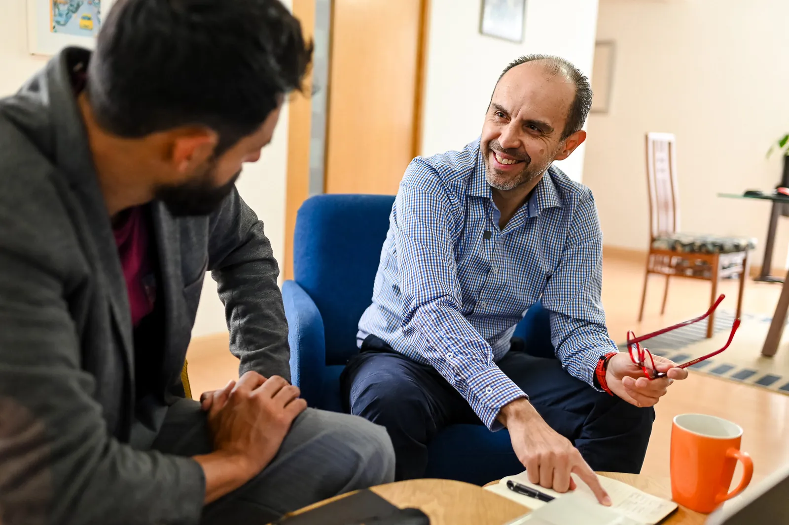
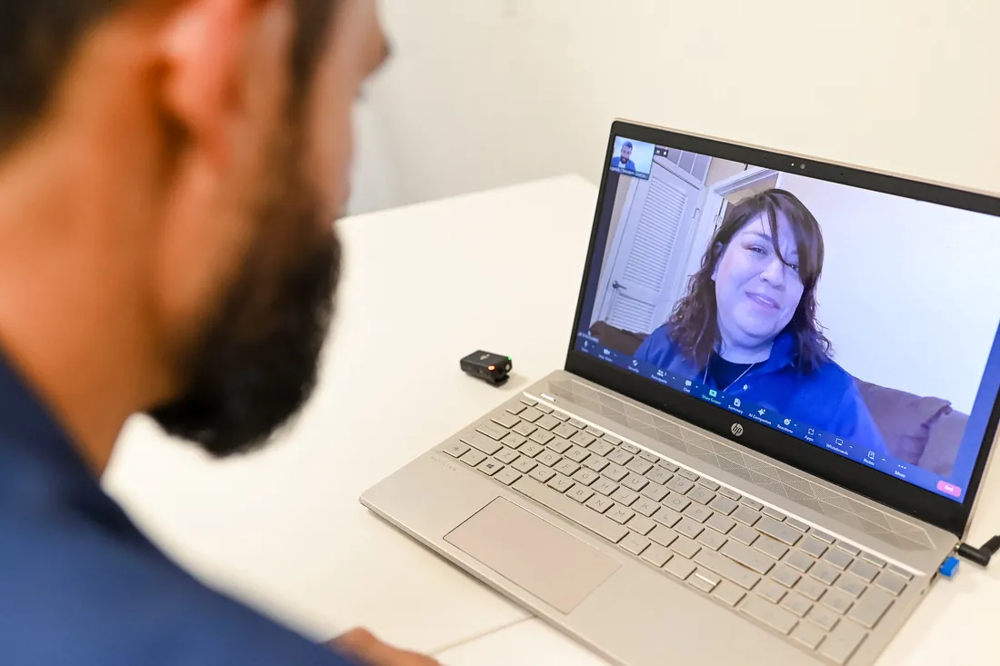
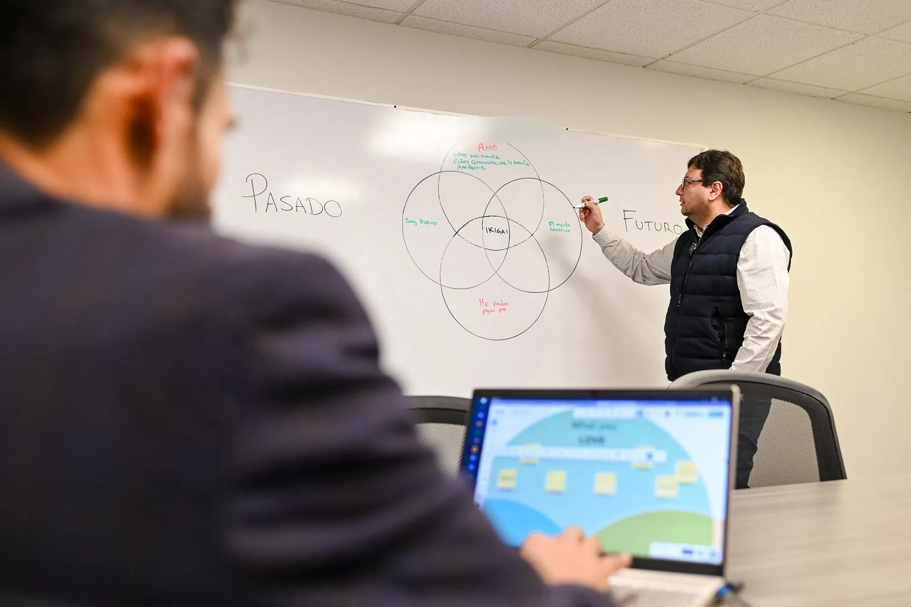
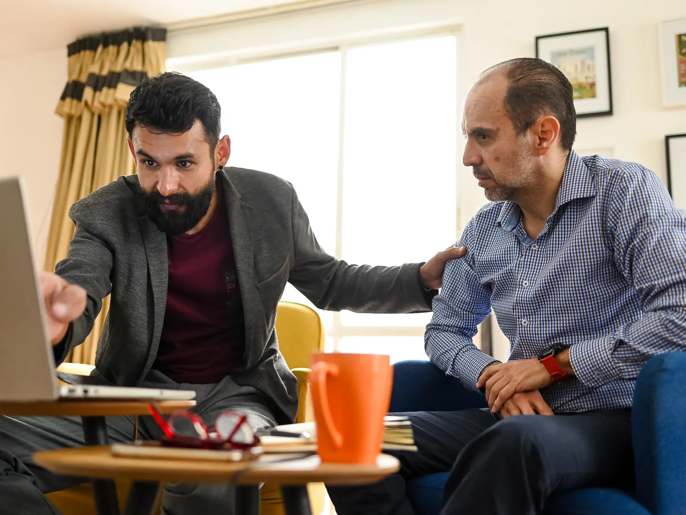
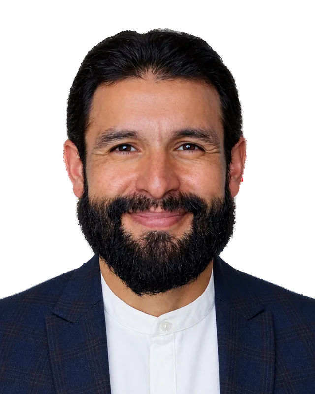
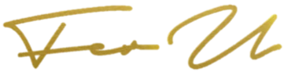

¿Sientes que vas sin rumbo aunque por fuera todo funcione?
Te acompaño a entender cuál es realmente el problema, a volver a confiar en ti y a recuperar tu camino. Tú eliges lo que quieres lograr y enfrentar.
¿Ya lo tienes claro? Agenda tu Sesión de Mapeo.
- 14 años de campo
- 200+ procesos 1 a 1
- 4.5/5 satisfacción promedio


Quizá te suene familiar
¿Te sientes sin rumbo?
Sabes lo que quieres, pero no cómo llegar.
¿Quieres saber de dónde viene el problema?
Lo que se repite tiene un origen. Lo encontramos juntos.
¿No sabes por dónde empezar?
Por eso empezamos con un mapa, y en el camino definimos el plan.
¿Por qué no llega eso que quieres?
Lo vemos juntos, sin juicio.
Si te reconociste en alguna, esto es para ti.
Lo que dicen quienes ya lo hicieron
“Antes de conocerlo, me sentía confundido, pasmado, sin un rumbo fijo. Sabía dónde quería ir, pero no sabía cómo llegar… Descubrí que era más sencillo de lo que imaginaba.”
“Con Fer logré comprenderme, y entender mis dinámicas de pareja, mi frustración profesional y por qué me sentía tan sin rumbo en mi vida. Me ayudó a recuperar mi soberanía personal, mi claridad profesional y a empezar una nueva familia con mi pareja.”
“Los resultados fueron claros: aumento en ventas, mejor productividad y mayor desempeño del equipo. Pero lo más importante fue recuperar el liderazgo en nuestra dirección empresarial.”
“…por llevarme al límite, por tu mano firme que no me soltó cuando lo necesitaba, por no permitir que cayera, por hacerme responder mis propias dudas y preguntas, por enseñarme que yo tengo las respuestas.”
“Me siento empoderado internamente. Ser vulnerable con alguien como Fernando fue verdaderamente hermoso.”
“Lo que realmente resalta en Fernando es su enfoque directo y pragmático. En lugar de rodeos, ofrece orientación clara y soluciones prácticas.”
“A través de su metodología, pude darme cuenta con más claridad de mis fortalezas y mis áreas de oportunidad. Revisamos diferentes áreas de mi vida y trabajamos en ellas para mejorar mi desempeño, mi aceptación y mi autoconocimiento.”
“Asumí una posición nueva como Director y necesitaba ordenar la estrategia, al equipo y entender mejor nuestro nicho de mercado… Más allá de las cifras, obtuve claridad para liderar con mayor seguridad.”
“Estar bien con el increíble valor que puedo compartir con el mundo y, al mismo tiempo, saber y abrazar todo lo que me limita, me acerca cada vez más a alcanzar mi definición de éxito, que es la libertad de ser quien en esencia soy.”
“Estamos unidos por muchas inseguridades y desafíos que me acompañaste a vencer. Desde aquí, te agradezco por siempre tener una palabra de aliento, por siempre tenderme una mano.”
“Fer me acompañó a enfrentar mis demonios.”
“Fer te ayuda a entender cuál es realmente el problema y cómo solucionarlo.”
“Fer te ayuda a volver a confiar en ti.”
“Fer te ayuda a recuperar tu camino y a conseguir lo que quieres en tu vida.”
“Fer es como un coach, chamán, psicólogo… y al mismo tiempo solo es Fer.”
En palabras de mis alumnos. Los resultados varían de una persona a otra. Ver más testimoniosTu camino no está escrito. Lo construimos juntos.
El desarrollo de un ser humano no es un destino al que llegas: es un camino que se experimenta toda la vida. Lo que sí tiene principio y fin es nuestro trabajo juntos, en ciclos de introspección y creación.

Mapeamos
En tu Sesión de Mapeo ves lo que normalmente no puedes o evitas ver y decidimos por dónde empezar.
Identificamos
De forma continua vemos qué te limita en tu pensamiento, tu identidad, tus relaciones, tus estrategias, tus decisiones y tus resultados.
Acuerdas y experimentas
De cada hallazgo sale un acuerdo contigo mismo que pruebas en tu vida real: una nueva forma de vivirte y de desempeñarte.
Medimos y ajustamos
Revisas tu mapa de 12 áreas como brújula. Lo que cambió ajusta el siguiente ciclo: el programa se arma sobre la marcha, a tu necesidad.
Es autoconocimiento, intención y acción continua: cómo piensas, cómo te ves y cuánta autonomía tienes para decidir. Tu realidad cambia porque cambia tu forma de ser, de pensar, de relacionarte y de decidir.
Entre sesiones, dos minutos al día (bitácora opcional en Reinvención Básica y Profunda)
- Calificas qué tan útil fue tu sesión.
- Cierras tus acuerdos con un color: cumplido, pospuesto o no cumplido. Lo pospuesto no se pierde: se vuelve a acordar, sin deuda.
- Dejas una línea para mí sobre lo esencial de tu día.
- Con el tiempo tu palabra se vuelve visible: ves cuánto cumples lo que te prometes, y así se fortalecen tu honorabilidad y tu dignidad.
Tú y yo guiamos el proceso. Nadie te entrega un camino hecho.
Mismo acompañamiento, caminos distintos.
Carlos
Director de agencia. Llegó con casi nada de producción y sin estructura. En el camino decidió dejar su agencia. Lo acompañé sin empujarlo hacia ningún lado: el éxito no siempre es vender más; a veces es recuperar tu vida.
Ernesto
Director que heredó su agencia. Por fuera todo funcionaba; por dentro estaba desconectado de su rol. Recuperó el rumbo y la claridad para dirigir.
Miguel
Director fundador, con 50 años en la industria. Diseñamos su siguiente capítulo: una nueva marca y una nueva profesión como conductor de radio de seguros.
Casos compartidos con el acuerdo de las personas involucradas. Los resultados varían de una persona a otra.
Así empieza: tu Sesión de Mapeo
- 60 minutos, en línea, tú y yo.
- Lees tu mapa de 12 áreas y ves cómo una empuja a otra.
- Te dibujas durante dos minutos y lo miramos juntos, como un espejo, no como una prueba.
- Sales con una propuesta que se ajusta a tu tiempo y a tu presupuesto.
En la Sesión de Mapeo el beneficio es simple: te das cuenta de lo que realmente te limita.
¿Te recomendó un exalumno? Tu Sesión de Mapeo no tiene costo. Avísame quién te recomendó al agendar.

Un proceso que se ajusta a ti
- Tu programa se define en el Mapeo, según tu tiempo y tu presupuesto.
- Pagas por anticipo o en transferencias semanales o mensuales.
- Si necesitas cancelar por razones económicas, no hay problema.
- Garantía de satisfacción, con condiciones. Ver términos
Programas desde $8,000 MXN
Precio especial, vigente hasta el 31 de diciembre de 2026.

Soy Fer U
Emprendí 18 veces, gané y perdí todo, y aun así no podía habitar mi propia piel con gusto. Lo que me cambió no fue otro logro: fue volver al origen. Hoy te acompaño a recorrer tu camino, sin atajos y sin empujarte hacia ningún lado.
14 años de campo, 6 años en el sector asegurador y un método afinado con generaciones de alumnos.

¿Cuándo será tu momento?
Empieza con tu Evaluación: 5 minutos, gratis y privada. Después, tu Sesión de Mapeo.
Recuerda… tú eres tiempo.